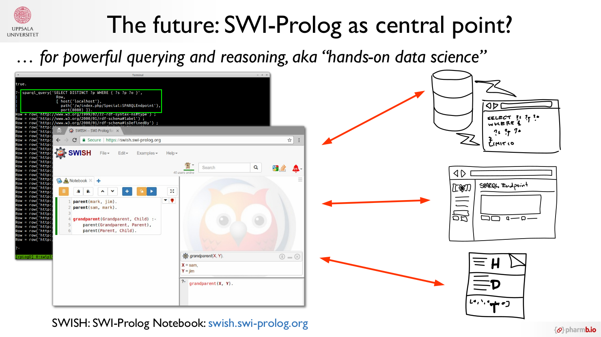

Semantic Web ❤ Data Science? My talk at Linked Data Sweden 2018
During the last months, I have had the pleasure work together with Matthias Palmér (MetaSolutions AB) and Fernanda Dórea (National Veterinary Institute), to prepare for and organize this year's version of the annual Linked Data Sweden event, which this year was held in Uppsala hosted by the SciLifeLab Data Centre.
Thanks to engaged speakers and attendees, it turned into an interesting day with great discussions, new contacts, and a lot of new impressions and insights.
I had the opportunity to present on the following topic:
Title: "Semantic Web ❤ Data Science?"
Subtitle: "Practical large scale semantic data handling with RDFIO
and RDF-HDT"
Abstract: Data in the life sciences are growing at an exponential
rate. The semantic web technologies which were initially thought up
before the "Big Data" era, have not always been optimal for handling
really large data sets. Based on our experience, the situation can
improve with the right approach, and some promising new developments to
better merge the worlds of semantic and big data.
- Slides (also find them embedded below)
- Video (17 min presentation + 5 min Q&A)
- Original video (My talk starts at 1:20:20)
Slides
Video
Note especially the ending slide, which summarizes my current thoughts for a good way forward towards "practical hands-on linked data science", using SWI-Prolog as a central integration point and workbench:

Papers
The papers / journal articles mentioned in the slides are:
-
Willighagen EL, Alvarsson J, Andersson A, Eklund M, Lampa S, Lapins M, et al. Linking the Resource Description Framework to cheminformatics and proteochemometrics. J Biomed Semantics [Internet]. 2011;2(Suppl 1):S6.
-
Lampa S. SWI-Prolog as a Semantic Web Tool for semantic querying in Bioclipse: Integration and performance benchmarking. 2010
-
Lampa S, Willighagen E, Kohonen P, King A, Vrandečić D, Grafström R, Spjuth O. RDFIO: Extending Semantic MediaWiki for interoperable biomedical data management. 2017;8(35):1–13.
-
Lapins M, Arvidsson S, Lampa S, Berg A, Schaal W, Alvarsson J, Spjuth O. A confidence predictor for logD using conformal regression and a support-vector machine. J Cheminf; 2018;10(1):17.
Otherwise, the whole day contained a lot of interesting talks though, so check the program, and links to the (now persisted) live streams at:
Also, see the report from the event by MetaSolutions AB.